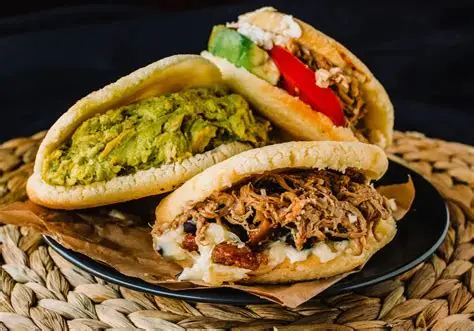

¿Que es la gran colombia?

La arepa venezolana y la arepa colombiana son dos versiones distintas de este alimento tradicional que reflejan la rica diversidad cultural de sus respectivos países. Aunque ambos países comparten el maíz como base, su preparación, consumo y significado cultural son muy distintos. La arepa venezolana es un plato principal que se consume rellena con una gran variedad de ingredientes, mientras que la arepa colombiana generalmente se sirve sin relleno y actúa como acompañamiento de otras comidas. La textura de la masa también varía entre ambos países, con la arepa venezolana siendo más gruesa y la arepa colombiana más delgada y compacta.